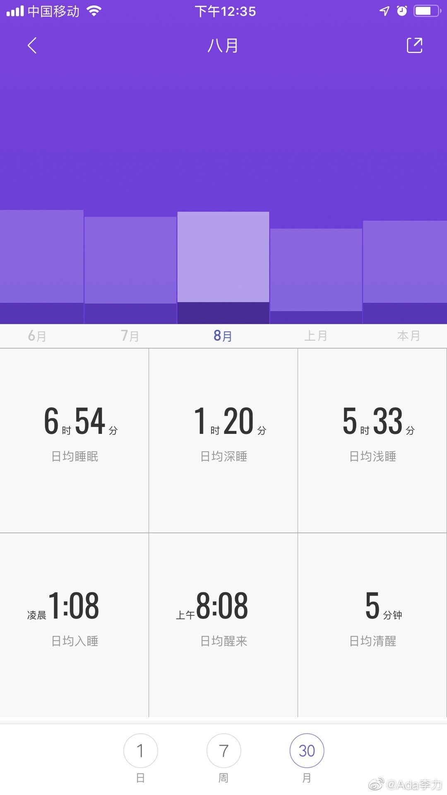

#不明所以#
睡眠数据分析。
九月份和八月份相比，入睡时间没变，起床时间早了一个多小时，所以看起来每晚睡眠时间也少了一个小时。
手环没检测到也没显示的是：九月份我几乎每天下午都要睡一觉，2个小时是标配。综合计算的话，九月份每日睡眠时间比八月份多一个小时。目前很难说早起这个改变，带来的益处有多大。
所以，连早起这么看起来简单的事情，都是个综合性改变，不是仅仅解决早上赖床问题就行了。你还要早睡，但早睡意味着，以后也不能九点后才吃晚餐。但假设你经常八点半才到家的话，怎么做才能把晚餐时间提前呢？于是继续改变工作习惯么？……
睡眠数据分析。
九月份和八月份相比，入睡时间没变，起床时间早了一个多小时，所以看起来每晚睡眠时间也少了一个小时。
手环没检测到也没显示的是：九月份我几乎每天下午都要睡一觉，2个小时是标配。综合计算的话，九月份每日睡眠时间比八月份多一个小时。目前很难说早起这个改变，带来的益处有多大。
所以，连早起这么看起来简单的事情，都是个综合性改变，不是仅仅解决早上赖床问题就行了。你还要早睡，但早睡意味着，以后也不能九点后才吃晚餐。但假设你经常八点半才到家的话，怎么做才能把晚餐时间提前呢？于是继续改变工作习惯么？……

- 